地政学
仁川は黄海に面し、中国、日本、北朝鮮、ソウルを結ぶ位置にあります。空港と港は韓国の外向きの回路であり、島しょ部や軍事境界の近さは、安全保障を暮らしの地図に近づけます。海と首都圏の接点である都市です。
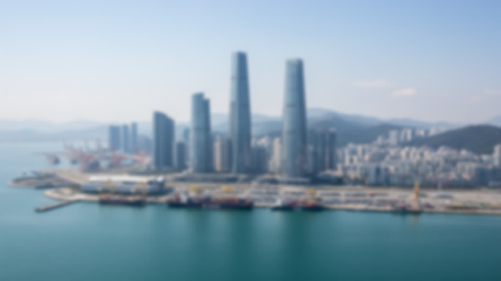
🇰🇷 韓国 / 仁川広域市 / World City Atlas
空港、港湾、松島、開港場、工業地帯、島と干潟が重なり、ソウル首都圏を黄海と世界市場へ開く韓国西岸の結節都市です。
都市の骨格
仁川はソウルの外港にとどまらず、国際空港、コンテナ港、工業団地、経済自由区域、島しょ部、歴史的な開港場を一つの行政都市に抱えています。
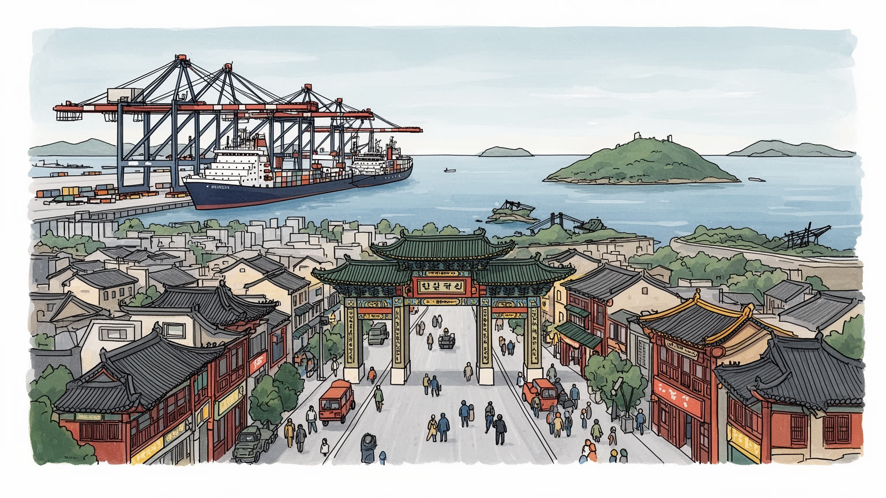
仁川は黄海に面し、中国、日本、北朝鮮、ソウルを結ぶ位置にあります。空港と港は韓国の外向きの回路であり、島しょ部や軍事境界の近さは、安全保障を暮らしの地図に近づけます。海と首都圏の接点である都市です。
空港、港湾、物流、機械、化学、バイオ医薬、自動車部品、観光が仁川の雇用を作ります。管制、荷役、倉庫、製造、研究、清掃、配送、ホテルの仕事が、首都圏経済を動かす実務を担っている都市です。要衝でもあります。
開港場、チャイナタウン、教会、寺院、移民の食、戦争の記憶、島の祭礼が近距離で重なります。仁川の文化は首都の影ではなく、海を越えた人と物の往来から生まれた混成の都市記憶を持つ港町です。海の信仰も残ります。
松島の高層住宅、旧市街の坂と市場、富平や南洞の通勤、永宗島の空港生活、江華の島旅が並びます。観光客は通過しがちですが、住民には住宅費、通勤、潮風、再開発が日常課題になる都市です。旅先と生活圏が重なります。
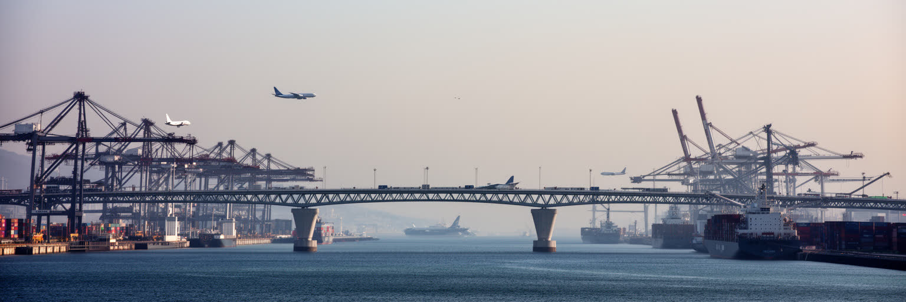
仁川は韓国を海と空へ開く都市です。仁川国際空港は旅客、貨物、乗り継ぎ、航空整備、免税、小売、ホテル、警備、清掃を集め、空港島の永宗には国境管理と生活圏が重なります。仁川港はコンテナ、完成車、穀物、化学品、旅客航路を扱い、首都圏の消費と製造業を背後で支えます。二つの玄関は別々の施設に見えて、保税倉庫、冷蔵物流、通関、道路、鉄道、橋、情報システムで結ばれています。ソウルの企業や消費者が世界市場へ近いのは、仁川の管制室、岸壁、滑走路、トラック運転、荷役、検疫の働きがあるからです。空港や港が止まれば、観光だけでなく半導体部材、医薬品、通販、食品、展示会、出張まで影響を受けます。華やかな空港ターミナルの背後には夜勤と交代制の仕事があり、港湾の速度の背後には騒音、排気、安全管理の負担があります。仁川を見る時は、到着ロビーや海辺の景色だけでなく、首都圏の在庫と人の移動を受け止める巨大な実務都市として読む必要があります。空港拡張や新港整備は国際競争力を高める一方、周辺の住宅、湿地、漁業、道路混雑にも影響します。物流の便利さは、誰かの夜間勤務と地域の環境負担の上に成り立ちます。航空貨物の冷蔵倉庫や港の自動化ヤードは、医薬品、食品、電子部品の時間管理を細かく支え、都市の信頼を作ります。危機時にはこの接続性が、救援物資や帰国便の生命線にもなります。
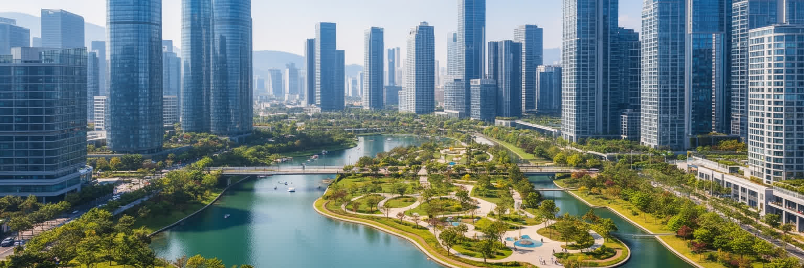
松島国際都市は、仁川の未来志向を最も分かりやすく見せる場所です。干潟と浅海を埋め立て、国際業務、大学、研究所、住宅、公園、展示場、ホテル、外国企業を誘致する計画都市として整備されました。広い道路、高層住宅、中央公園、水路、会議施設は、従来の港町や工業都市とは異なる仁川の顔を作ります。経済自由区域としての制度は、首都圏に外資、国際学校、バイオ研究、国際機関を呼び込む狙いを持りました。しかし計画都市は、完成された景観だけでは評価できません。広い街区は歩行者に距離を感じさせ、商業の密度や街角の偶然性が育つには時間がかかります。住宅価格、空室、通勤、学校、保育、地域の店の継続も、見た目の先進性とは別の都市課題です。松島は、韓国がグローバル都市競争へ参加する意思を示す舞台であると同時に、自然を埋め立てて作った都市が環境と生活をどう調整するかを問う場所でもあります。新しい公園や水辺は魅力的ですが、埋立地の記憶や周辺漁業の変化を消すものではありません。都市計画の成功は高層ビルの数ではなく、働く人、学生、家族、高齢者が日常を自然に営めるかで測られます。松島は未来都市という看板の下で、計画の精密さと生活の予測不能さが毎日すり合わされる実験場です。きれいな街路に時間が積もるほど、この街は仁川の一部として深く読めるようになります。駅前の小さな店も街を育てます。
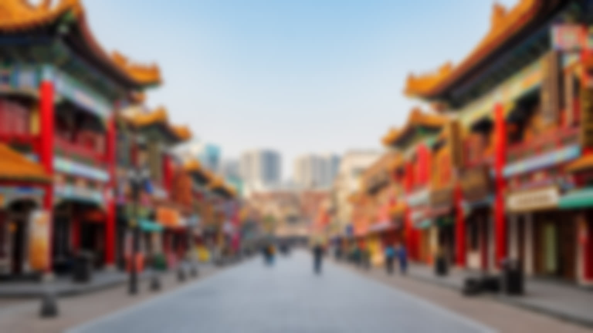
仁川の旧市街を歩くと、韓国近代の開港場としての時間が残っています。十九世紀末に国際港として開かれたことで、中国、日本、西洋の商人、領事、宣教師、労働者が入り、港の周囲に外国人居留地、銀行、倉庫、教会、学校、飲食店が集まりました。チャイナタウンは観光名所として知られるが、その背景には華僑社会の移動、差別、商売、食文化、家族の歴史があります。ジャージャー麺の物語は親しみやすい入口ですが、開港場は植民地化、戦争、引き揚げ、冷戦、再開発を経験した複雑な場所でもあります。古い建物を保存し、坂道や壁画を整えることは観光を生む一方、住民の暮らしや商店の継続を難しくする場合があります。仁川の開港場は、異国情緒を消費するだけの街ではありません。朝鮮半島が世界システムへ組み込まれ、主権、交易、宗教、言語、食、金融が同じ岸壁で交差した記憶の場所です。観光客のカメラが向く門や階段の近くには、古い住宅、学校、教会、市場が今も生活を続けます。歴史街区を読むには、どの建物が残り、どの記憶が見えにくくなったのかを考える必要があります。仁川の中華街は、韓国都市の多文化性を明るく見せるだけでなく、移民が制度と偏見の間で居場所を作ってきた現実も伝えています。港町の記憶は、食堂の味と路地の石段に静かに積もっています。保存地区の歩き方は、写真を撮る楽しさと生活への敬意を両立させる姿勢を求めます。
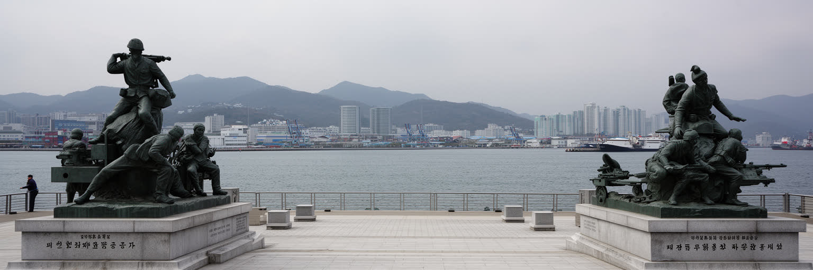
仁川は朝鮮戦争の記憶を抜きに理解できません。1950年の仁川上陸作戦は、戦況を大きく変えた軍事作戦として記録され、港と潮汐、狭い水路、都市地形が戦略の中心になりました。成功物語として語られることも多いが、都市にとって戦争は軍事的な転回点だけでなく、避難、破壊、占領、家族の離散、港湾施設の再編を意味しました。記念施設や展示は作戦の規模を伝える一方、そこに暮らしていた住民や労働者の視点をどこまで含めるかが問われます。仁川の海は輸出入と観光を支える水面であると同時に、戦争の上陸路であり、分断国家の安全保障を思い出させる場所でもあります。黄海の島々は北朝鮮に近い地域を含み、軍事的緊張や漁業の制約、避難訓練が生活に影を落とすことがあります。仁川の地政学は遠い国際政治ではなく、港、空港、島、海岸道路、ニュース、学校教育に近いです。戦争の記憶を観光の一場面として消費するだけでは、都市が抱える不安と回復を見落とします。仁川は開かれた玄関であるほど、危機時には重要な防衛と補給の場所になります。だからこの都市の海辺には、便利さと緊張、国際性と分断の記憶が同時に置かれています。戦後の復興と産業化は、港を再び生活の基盤に変えたが、分断の境界は完全には遠ざかりません。仁川を読むことは、朝鮮半島の海が交流と戦争の両方を運んできた事実を見ることでもあります。
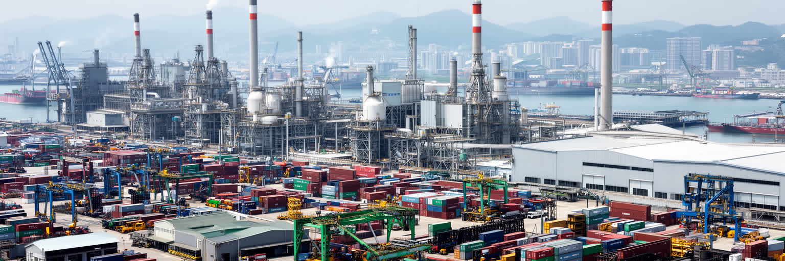
仁川の経済は、空港や松島の新しさだけでは語れません。南洞国家産業団地をはじめとする工業地帯には、機械、金属、化学、電子部品、自動車部品、食品、包装、バイオ関連の工場が集まります。首都圏に近く、港と空港へ接続しやすいことは、部材の輸入、製品の輸出、技術者の移動、営業活動に大きな利点を与えます。製造現場では、熟練工、外国人労働者、派遣、下請け、中小企業の経営者、品質管理担当者が、世界市場の価格と納期に向き合います。バイオ医薬や先端素材の成長は都市のイメージを変えるが、古い工場の安全、騒音、排水、労働災害、賃金、技能継承も同じ経済の一部です。仁川は消費の首都ソウルに近いだけでなく、実際に物を作り、運び、修理する都市であり続けています。工業地帯の食堂、寮、バス停、コンビニ、工具店には、統計に表れにくい日々の労働が見えます。産業の高度化は必要ですが、土地価格や再開発によって中小製造業が押し出されれば、首都圏のものづくりの厚みは薄くなります。工場を単なる古い景観として扱うのではなく、技能と雇用の場所として更新することが重要です。仁川の実体経済は、港湾の速度、空港の国際性、工場の粘り強い改善が結びついて成り立ちます。都市の未来は研究拠点だけでなく、現場の安全と働き続けられる賃金にも左右されます。技能教育と外国人労働者の支援は、産業都市としての持続力を左右します。
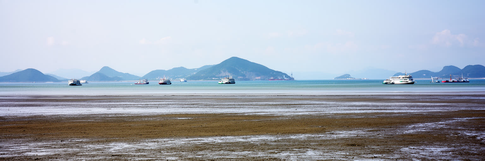
仁川は高層ビルと港だけの都市ではなく、江華島、永宗島、甕津郡の島々、干潟、漁港、潮汐の海を含む広い行政都市です。黄海の潮の満ち引きは大きく、干潟は渡り鳥、貝、漁業、塩田、観光、環境教育の場になります。江華島には高麗時代の記憶、寺院、要塞、農村景観があり、都市の中心部とは異なる時間が流れます。永宗島は空港によって世界と直結したが、空港開発の前には漁村と干潟の暮らしがありました。島々ではフェリー、橋、医療、学校、買い物、災害対応が生活の条件になり、高齢化や人口減少も課題です。観光客は海辺のカフェや夕日を求めるが、潮の危険、漁業権、軍事的な制約、環境保護を理解しなければ、島の生活を単純な余暇空間として消費してしまいます。仁川の自然は都市から離れた背景ではなく、空港、港、住宅、観光、軍事、安全保障と重なる現実です。干潟の埋立ては都市の成長を支えたが、失われた生態系や漁業の記憶も残ります。気候変動で高潮や海面上昇のリスクが高まれば、島と沿岸部の備えはさらに重要になります。仁川を読むには、中心市街地から海へ視線を伸ばし、橋の先にある小さな港と干潟の時間を同じ都市の一部として扱う必要があります。潮のリズムは、物流都市の速さに別の尺度を与えています。島の学校や診療所を残すことは、観光資源を守る以前に、海辺で暮らし続ける権利を支える政策でもあります。
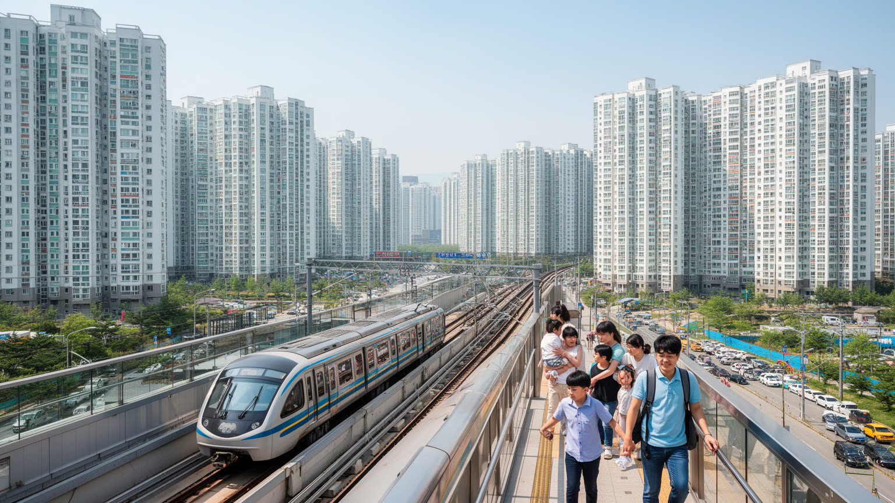
仁川はソウル首都圏の一部として、住宅と通勤の圧力を強く受けます。富平、桂陽、南洞、延寿、青羅、松島、検丹などには大規模な集合住宅が広がり、地下鉄、広域鉄道、バス、高速道路がソウルや京畿道の職場へ住民を運びます。ソウルより手ごろな住まいを求めて移る人もいれば、仁川市内の工場、空港、港、病院、学校、商業施設で働く人も多いです。住宅団地は保育園、学習塾、スーパー、診療所、公園を近くに置く生活単位になりますが、長距離通勤、駅からの距離、渋滞、家賃上昇、再開発の不安も生みます。旧市街には坂道や老朽住宅が残り、新しい高層団地との格差が景観にも表れます。松島や青羅の整った街区は新しい中間層の生活を引き寄せる一方、古い市場や工業地帯近くの住宅は別の労働と家計の現実を抱えます。仁川の暮らしは、首都のベッドタウンという言葉だけでは捉えられません。空港夜勤の帰宅、港湾トラックの道路、工場の交代制、学生の通学、子育て世帯の学区選びが、都市のリズムを作っています。住宅政策は単に戸数を増やすだけでなく、職場への近さ、公共交通、高齢者の移動、災害時の避難、地域商店の継続を含めて考える必要があります。仁川の住民は、海に近い開放感と首都圏の競争圧力を同時に生きています。日常の都市価値は、通勤時間をどれだけ取り戻せるかにも表れます。駅前再開発は便利さを増すが、家賃と記憶を同時に揺らします。
仁川の食と文化は、港を通じた移動から生まれてきました。チャイナタウンの中華料理、開港場周辺の洋風建築、港の労働者を支えた食堂、島の海産物、富平や新浦の市場、移民コミュニティの食材店が、都市の味を多層にします。韓国の都市としてのキムチ、チゲ、焼肉、粉食の基盤に、華僑、在韓外国人、船員、空港利用者、観光客の流れが加わります。新浦市場の鶏料理や屋台、月尾島の海辺の飲食、江華の郷土食は、観光名物である前に地域の記憶です。宗教施設も文化の一部で、教会、寺院、カトリック聖堂、移民の礼拝空間が、家族行事や福祉、教育と結びつきます。仁川はソウルの文化を受け取るだけではなく、港町として外来のものを生活へ編み込み、時に韓国化してきた都市です。一方で、観光化は味や街並みを分かりやすく演出し、実際に暮らす人の複雑な歴史を薄めることがあります。多文化を語る時には、看板や料理だけでなく、移民の労働条件、学校、言語、医療、差別、家族の将来も見る必要があります。仁川の文化の魅力は、異国情緒の表層ではなく、港で出会った人びとが商い、祈り、食べ、住み続けた時間にあります。市場の湯気、空港の乗客、島の漁港、旧市街の階段を一緒に歩くと、この都市の混成の深さが見えてきます。食は、仁川が世界と日常を結んできた最も身近な証拠です。世代が交代しても、店の味は港町の記憶を運び続けます。
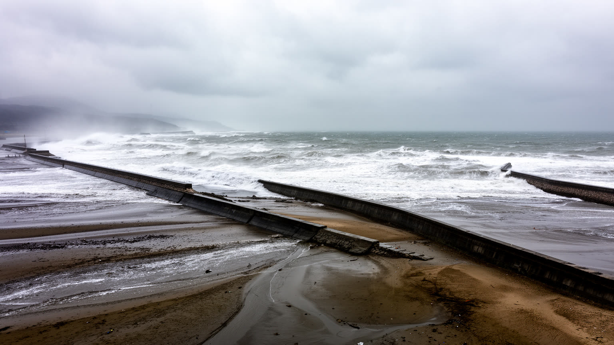
仁川の気候は、黄海の沿岸性と朝鮮半島の寒暖差を併せ持ちます。冬は冷たい北西風が吹き、海辺や島では体感温度が下がります。夏は蒸し暑く、梅雨や集中豪雨、台風の影響を受けることがあります。空港では霧、強風、雪、雷が運航判断に関わり、港では高潮、波浪、視界不良が安全管理を左右します。海沿いの都市にとって天候は景色の背景ではなく、物流、通勤、漁業、観光、建設労働、学校生活を動かす条件です。干潟と島が広がる地域では、潮汐を知らない観光客の事故防止も重要になります。気候変動によって豪雨や高潮のリスクが高まれば、埋立地、地下空間、沿岸道路、港湾施設、低地の住宅はより慎重な備えを求められます。都市の暑熱対策も課題で、高層住宅や広い道路、工業地帯では熱の逃げ方が地区ごとに異なります。仁川の環境政策は、空港や港の排出、工場の大気、交通、干潟保全、緑地整備を一体で考える必要があります。海風は開放感を与えるが、塩害や冬の厳しさも運びます。住民にとって気候は、洗濯物、通勤服、車の腐食、漁の予定、子どもの外遊び、高齢者の外出に直結する日常の感覚です。港湾都市の強さは、天候に抗う巨大施設だけでなく、天候を読みながら暮らしと仕事を止めない細かな備えに表れます。海と近い都市ほど、自然を忘れた瞬間に脆弱になります。霧の日の遅延や強風時の橋の規制は、沿岸都市の便利さが天候と常に交渉していることを示します。
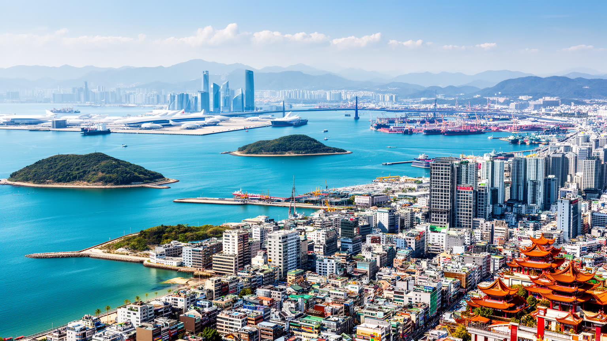
仁川は、空港で通過するだけでは見えない都市です。旅行者にとっては韓国到着の玄関であり、ソウルへ向かう前の駅名かもしれません。しかし都市の内側へ入れば、開港場、チャイナタウン、港湾、工業団地、松島、空港島、江華島、干潟、旧市街の市場、集合住宅、戦争記念施設が、一つの都市圏としてつながっています。仁川の重要性は、ソウルに近いことだけでなく、ソウル首都圏を世界へ接続しながら、自分自身の歴史と労働を持つ点にあります。港と空港の国際性は、移民、物流、観光、軍事、環境、住宅の問題を同時に運び込みます。松島の未来都市的な景観と、開港場の古い坂道、南洞の工場、島の干潟は、韓国近代化の異なる層を見せます。都市を成功物語としてだけ読むと、埋立てで失われた海や、夜勤の労働、旧市街の再開発不安、島しょ部の高齢化が見えにくくなります。逆に問題だけで読むと、仁川が持つ開放性、食文化、産業の実力、海辺の魅力、生活の粘り強さを見落とします。仁川は首都圏の裏口ではなく、海と空、記憶と計画、製造と観光、軍事と日常が交差する前面の都市です。空港から一駅先、港の岸壁の向こう、干潟の潮の先へ視線を伸ばすほど、韓国の都市構造は立体的に見えます。この都市を読むことは、グローバル化がどのような場所と労働に支えられているのかを読むことでもあります。到着地ではなく都市として歩く時、仁川は韓国の海への想像力を広げる入口になります。